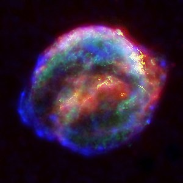

Planets

Earth
Earth is the third planet from the Sun and the only astronomical object known to harbor life. While large volumes of water can be found throughout the Solar System, only Earth sustains liquid surface water. About 71% of Earth's surface is made up of the ocean, dwarfing Earth's polar ice, lakes, and rivers. The remaining 29% of Earth's surface is land, consisting of continents and islands. Earth's surface layer is formed of several slowly moving tectonic plates, interacting to produce mountain ranges, volcanoes, and earthquakes. Earth's liquid outer core generates the magnetic field that shapes Earth's magnetosphere, deflecting destructive solar winds.
Earth's atmosphere consists mostly of nitrogen and oxygen. Greenhouse gases in the atmosphere like carbon dioxide (CO2) trap a part of the energy from the Sun close to the surface. Water vapor is widely present in the atmosphere and forms clouds that cover most of the planet. More solar energy is received by tropical regions than polar regions and is redistributed by atmospheric and ocean circulation. A region's climate is governed by latitude, but also by elevation and proximity to moderating oceans. In most areas severe weather, such as tropical cyclones, thunderstorms, and heatwaves, occurs.
Tau Ceti E
Tau Ceti e, also called 52 Ceti e, is an exoplanet orbiting Tau Ceti that was detected by statistical analyses of the data of the star's variations in radial velocity that were obtained using HIRES, AAPS and HARPS. Its possible properties were refined in 2017: it orbits at a distance of 0.552 AU (between the orbits of Venus and Mercury in the Solar System) with an orbital period of 168 days and has a minimum mass of 3.93 Earth masses. If Tau Ceti e possesses an Earth-like atmosphere, the surface temperature would be around 68 °C (154 °F). Based upon the incident flux upon the planet, a study by Güdel et al. (2014) speculated that the planet may lie inside the inner-boundary of the habitable zone and closer to a Venus-like world.
Stars
Pulsar
A pulsar (from pulsating radio source) is a highly magnetized rotating neutron star that emits beams of electromagnetic radiation out of its magnetic poles. This radiation can be observed only when a beam of emission is pointing toward Earth (similar to the way a lighthouse can be seen only when the light is pointed in the direction of an observer), and is responsible for the pulsed appearance of emission. Neutron stars are very dense and have short, regular rotational periods. This produces a very precise interval between pulses that ranges from milliseconds to seconds for an individual pulsar. Pulsars are one of the candidates for the source of ultra-high-energy cosmic rays. (See also centrifugal mechanism of acceleration.)

Supernova
A supernova is a powerful and luminous explosion of a star. It has the plural form supernovae /-viː/ or supernovas, and is abbreviated SN or SNe. This transient astronomical event occurs during the last evolutionary stages of a massive star or when a white dwarf is triggered into runaway nuclear fusion. The original object, called the progenitor, either collapses to a neutron star or black hole, or is completely destroyed. The peak optical luminosity of a supernova can be comparable to that of an entire galaxy before fading over several weeks or months.
Supernovae are more energetic than novae. In Latin, nova means "new", referring astronomically to what appears to be a temporary new bright star. Adding the prefix "super-" distinguishes supernovae from ordinary novae, which are far less luminous. The word supernova was coined by Walter Baade and Fritz Zwicky in 1929.
The last supernova to be directly observed in the Milky Way was Kepler's Supernova in 1604, but the remnants of more recent supernovae have been found. Observations of supernovae in other galaxies suggest they occur in the Milky Way on average about three times every century.
Other celestial bodies

Black hole
A black hole is a region of spacetime where gravity is so strong that nothing – no particles or even electromagnetic radiation such as light – can escape from it. The theory of general relativity predicts that a sufficiently compact mass can deform spacetime to form a black hole. The boundary of no escape is called the event horizon. Although it has a great effect on the fate and circumstances of an object crossing it, it has no locally detectable features according to general relativity. In many ways, a black hole acts like an ideal black body, as it reflects no light. Moreover, quantum field theory in curved spacetime predicts that event horizons emit Hawking radiation, with the same spectrum as a black body of a temperature inversely proportional to its mass. This temperature is of the order of billionths of a kelvin for stellar black holes, making it essentially impossible to observe directly.